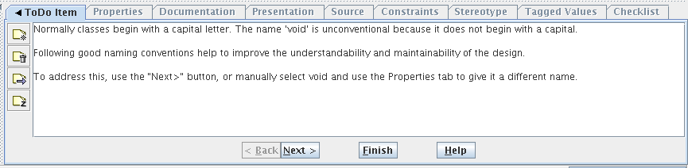

ArgoUML's ToDoItem Tab shows the description of the selected "to do" item in the ToDo Pane. The description consists three short paragraphs about the problem, why this problem is likely to be important to you, and steps that you can take to resolve the problem.
The toolbar icons along the left edge of the tab pane allow you to:
Some critics generate "to do" items that can help you automatically resolve the identified problem. If an automation is available, the "Next>" or "Finish" buttons will be enabled. The ToDoItem tab will then function as a wizard, leading you through the steps of resolving the problem. Unlike most wizards in other applications, ArgoUML's wizards are not modal: you can work part way through one wizard, and then use other tools or even other wizards, then continue on the wizard you initially started. As you work through the wizard, a small progress bar will be shown in green on the yellow sticky note icon for the "to do" item.
Back to ArgoUML Tours
Back to ArgoUML Home